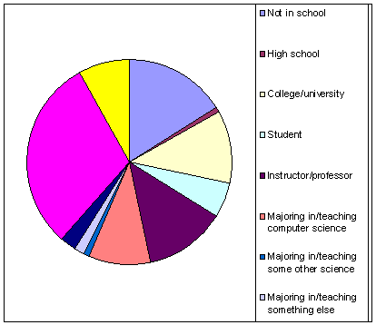
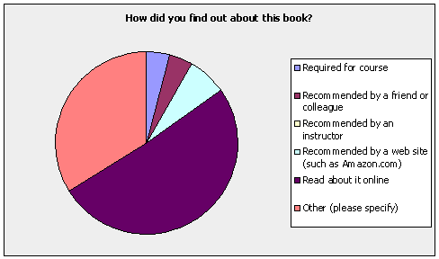
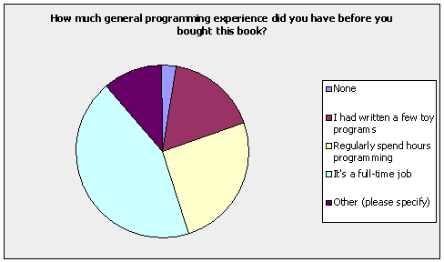
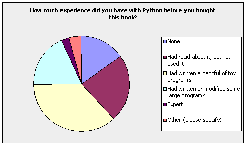
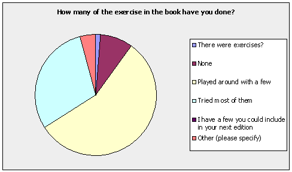

Feedback on the Python Book
71 people have answered our questionnaire about Practical Programming. Here’s some of what they told us; I’ll summarize the questions about use of online programming resources and what we could do differently next time in a subsequent post.
Demographics

Channels

General Background

Python Background

Exercises

Individual Chapters
| Most Useful | Least Useful | |
| Introduction | 9.7% | 25.0% |
| Hello, Python | 17.7% | 31.3% |
| Strings | 21.0% | 20.8% |
| Modules | 24.2% | 10.4% |
| Lists | 37.1% | 8.3% |
| Making Choices | 19.4% | 12.5% |
| Repetition | 22.6% | 8.3% |
| File Processing | 46.8% | 4.2% |
| Sets and Dictionaries | 43.5% | 6.3% |
| Algorithms | 48.4% | 8.3% |
| Searching and Sorting | 45.2% | 8.3% |
| Construction | 25.8% | 8.3% |
| Object-Oriented Programming | 56.5% | 8.3% |
| Graphical User Interfaces | 29.0% | 33.3% |
| Databases | 46.8% | 18.8% |